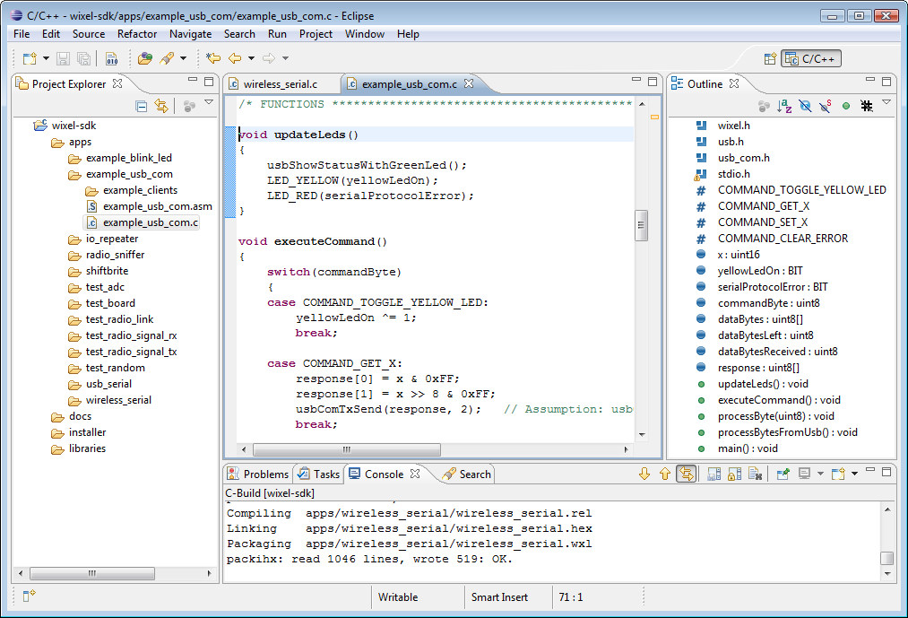

Lab 0
Please complete ASAP!Install the necessary software:
In your work for this course, you will need to have access to the following programming tools:
- Java development kit (JDK): Although most computers already have the necessary software to run Java programs, they don’t all have the necessary software to develop new Java programs, which is why you may need to install the JDK.
- Eclipse IDE: You will use this to develop your programs. (Note: You’re welcome to use a different IDE – or none at all – when developing your programs. However, we recommend Eclipse for this course, and it is the only IDE for which we will be able to offer support.)
The steps needed to obtain and install these tools depend on the operating system that you’re using. Select the appropriate link below:
(Note: You can also use these tools on the computers in the undergraduate lab. See instruction below to set up your CS account)
HelloWorld
If you have some extra time and want to get started on Lab 1 try to create a HelloWorld program in Java. Go to the lab here and follow the instructions under "Creating a new Java project".
After that try to experiment and have the console display "HelloWorld" and start working to understand how methods work under "Functions". Ask if you need any help! At the very end of lab we will go over how to do it.
Optional tasks:
Set up your CS account:
In order to use the computing resources of the computer science department, you may need to set up a CS account, which is different from your regular BU account. Anyone who is not a declared CS major or CS minor will need to set up an account, even if you previously created one for a course in a prior semester.
To create an account, you will need to go the CS undergraduate lab, which is located in EMA 302 (730 Commonwealth Avenue; the main entrance is by Pavement Coffeehouse). Make sure to bring your BU ID with you to the lab.
Once you get to the lab, talk to a student by the window and ask them on how to set up your CS account.
Review course policies
As your next task, please review the policies of the course, which can be found in the syllabus on Blackboard. In particular, please review carefully the policies on collaboration and academic misconduct for this course. A good guide for this can be found here. Note that under some circumstances collaboration between students is encouraged, but there are important limitations to the extent to which you may do so. Read over these policies and ensure that you understand to what degree you may work with others. Feel free to let us know if you have any questions.